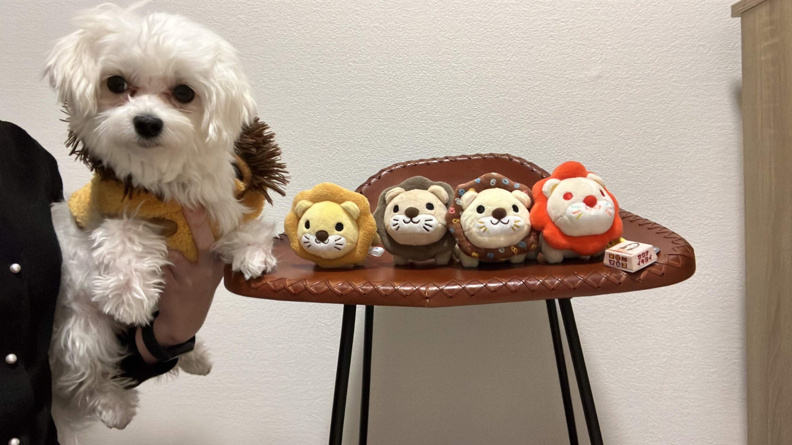

見えないものを感じ取り、"ととのった"未来を、そっと描いていく
— 人によりそう優しさと、深い思考と、広い視点。
あなたの中の34人の"小さな自分"を、ゆっくり見にいきましょう。
ストレングスファインダーは、はぴこさんの中にいる「ついやっちゃう小さな自分」たち34人を、強い順に並べたものです。いい・悪いではなく、「どんな時に心地よくて、どんな時にエネルギーを使うか」の地図。まずは、ぜんたいの空気から。
はぴこさんは、「見えないものを感じ取る」人です。人の気持ち、出来事のつながり、その人の中に眠っている可能性——多くの人がスッと通り過ぎてしまうものを、はぴこさんはちゃんとキャッチしている。だから一緒にいる人は、知らないうちに「わかってもらえてる」という安心に包まれます。
そして、ただ感じ取るだけじゃない。深く深く、自分の中で噛み砕いていく人でもあります。表面の言葉をそのまま受け取らず、「ほんとうはどういうことだろう」と掘り下げる。だから、はぴこさんの口から出てくる言葉には、独特の深みと優しさがある。柔らかいのに、芯がある——そういう人です。
その上で、はぴこさんは「未来」と「縁」を信じている。すべての出会いや出来事に意味を見出し、まだ見えない先のことを、希望をもって描ける。派手に旗を振るタイプではないけれど、そばにいる人を、そっと前向きにあたためてくれる——そういう温度を持った人です。
人間関係構築力 × 戦略的思考力タイプ
34の資質は、4つの色（領域）に分かれています。はぴこさんのTOP5がどの色に集まっているかを見ると、「どんな力で世界と関わる人か」がわかります。
人によりそう優しさを持ちながら、深い思考と、広い視点を持っている人。
はぴこさんには、わたしたちには見えないものが、見えている。
はぴこさんの上位5人の"小さな自分"を、ひとりずつ紹介します。それぞれの説明の最後にある「🌿 はぴこさんの場合」は、プロファイリングのなかで見えてきた、あなたらしさです。「あ、これ私かも」を探しながら読んでみてください。各カードの「📖 資質ガイドをもっと詳しく」を開くと、その資質の基本説明や"喜ぶこと・省エネになること"まで深掘りできます。
相手がどんな気持ちでいるか、何を求めているかを自然に感じ取る人。「どうやったらこの人は喜ぶかな」を、考えるより先に感じている。場の空気の細かな揺れまでキャッチできる、繊細で温かいアンテナです。感じ取るだけでなく、自分の気持ちを素直に表現することも、この資質の大切な一面です。
「自分が嬉しかったことを人にすればいい、とよく言うけれど、必ずしも全部が当てはまるわけじゃない。相手が何を求めているかを感じることが大事」——はぴこさんが発信していたこの言葉に、共感性の本質が表れています。マイナスなことを言っている人がいると、励ましたくなる。その温度が、いつも周りをやわらかくしています。
あらゆる物事には意味があり、つながっていると感じる人。「この出会いも何かの縁かな」「この出来事には、きっと意味がある」——目に見えないつながりを大切にします。だから、しんどい出来事さえ「これは成長の機会なんだ」と意味づけし直して、前に進む力に変えられる。これは、世の中の理念ある経営者や成功者にも多い、芯の通った資質です。
『7つの習慣』を心から大切にして、それを軸に行動していること。これは運命思考と深くつながっています。「自分にはこういう役割があるんだ」「今のこの出来事にも意味があるんだ」と感じ取る力が、はぴこさんのミッション（使命）への思いを支えています。この取説と出会えたことも、きっと何かの縁ですね。
「この人はこういう特徴があって、こんな強みを生かせたら面白いんじゃないかな」——一人ひとりの個性を、自然と見抜く人。みんなを同じカテゴリーでくくらず、その人だけのキャラクターや持ち味を見つけるのが得意です。誰の中にも眠っている、その人らしさを、ちゃんと見つけてあげられる目を持っています。
共感性で気持ちに寄り添い、個別化でその人の個性を見抜き、運命思考と未来志向で「この人はこんな未来を描けるんじゃないかな」とまで見通せる。これはほぼ、コーチングそのものの関わり方です。はぴこさんはきっと、自然と人を元気づけたり、勇気づけたりできているはずです。
頭の中に何人もの自分がいて、静かに自己対話をしながら、思考をどんどん深めていく人。考えること自体が、エネルギーの源になります。内省を持つ人は、自分の中で言葉を繰り返し噛み砕いているので、言語化する力が高く、出てくる言葉に深みがある方が多いです。
居酒屋でお話ししたとき感じたのは、人当たりの柔らかさ＋思いの強さ、芯の強さ。そして、ハマったらガッとはまり込む奥深さ。これは内省がもたらしているもの。表面的な言葉尻ではなく、奥まで掘り下げて考えられるから、発する言葉に独特の重みと優しさが宿るのです。
「こうなったら面白そうだな」という未来のビジョンを、鮮やかに思い描ける人。まだ来ていない先のことに、ワクワクできる。その未来像は、自分だけでなく、まわりの人をも希望で満たします。霧の向こうにある景色を、誰よりも早く、あざやかに見られる目です。
個別化で人の個性を見抜き、共感性で気持ちに寄り添ったうえで、未来志向でその人の可能性ある未来を描いてあげられる。これは、はぴこさんがごく自然にやっていること。あなたが見ている景色は、ほかの人にはなかなか到達できない、大きくて広いものなのです。
同じはぴこさんでも、力がのびのび出る場面と、こっそりエネルギーを使う場面があります。これは「得意・苦手」というより、「どこに自分を置くと楽か」の地図。責めるためじゃなく、選ぶために使ってください。
「ちょっと地に足がついていないかも」「現実とズレている気がする」と感じることがあるかもしれません。でも、それははぴこさんの見ている世界が、わたしたちより大きくて広いから起きていること。運命思考・未来志向が強い人は、目の前の「今ここ」より、ずっと先の景色が見えてしまう。
そのギャップは欠点ではなく、はぴこさんにしか見えていない景色がある証拠です。そして運命思考のあなたなら、その"迷い"さえ、「なぜ今これを感じているんだろう」と意味づけして、次への糧にできるはずです。
資質はひとつずつより、組み合わさった時に「はぴこさんらしさ」になります。上位の資質が手をつないだ時に起きる、あるあるを集めました。
感じ取ったことを、自分の中で深く噛み砕いてから言葉にする。だから表面的じゃない、本質をついた優しい言葉が出てくる。「相手が何を求めているか」を感じ取れるのは、この合わせ技です。
「この出会いには意味がある」と感じ、その先に描ける未来をイメージする。だから出来事を点で見ず、物語として捉えられる。理念や使命に芯が通っているのは、ここから来ています。
みんなを同じくくりにせず、一人ひとりの持ち味を見抜く。そこに気持ちへの共感が重なって、「自分のことをわかってくれてる」という深い安心を、相手に渡せます。
意味を見出す力と、深く考える力。それを『7つの習慣』のミッションステートメントが支える。自分は何のために生きるのかを、はぴこさんは自然と問い続けられる人です。
見えないものを感じて、それを"見えるもの"にして、現実に生かしていく。
それが、はぴこさんの才能です。
共感性の高い人は、人の感情を受け止めすぎて、ときどき疲れてしまうことがあります。だからこそ、自分の心が喜ぶ時間を持つことが、はぴこさんにとってはとても大切。これは贅沢じゃなくて、のびのび力を出すための"充電"です。

言葉のいらない、まっすぐな存在。感じ取りすぎて疲れた心を、なにも求めずに、するっとほどいてくれるのが、ワンちゃんとの時間。共感性のアンテナを、そっと休ませてあげられます。
頭の中でずっと思考している内省タイプにとって、サウナは考えを手放して、感覚に戻れる場所。"ととのう"あの瞬間は、はぴこさんが自分の心の声に、いちばん素直になれる時間かもしれません。
迷ったとき、自分の軸に立ち返れる一冊。運命思考の「意味を見出す力」と、いちばん相性のいい習慣。ミッションステートメントは、はぴこさんの霧を晴らす羅針盤です。
この企画に応募してくれたとき、はぴこさんは「ちょっと迷子中」と話してくれました。1つずつ資質を見ていくと、その"迷子"の正体が、少しだけ見えてきます。
運命思考も未来志向も、とても抽象度の高い資質です。「今ここ」を生きる資質が上位に来ていないぶん、はぴこさんはずっと先の、大きくて広い景色を見ています。だからこそ、今の自分がどこに向かっているのか、足元が少し見えづらくなる瞬間があるのかもしれません。
でも、それは迷っているのではなく、これから描く未来が大きいというサイン。運命思考のあなたなら、「なぜ今これを感じているんだろう」と意味づけして、ちゃんと次の一歩につなげられます。焦らなくて大丈夫。霧は、少しずつ晴れていきます。
資質をもとに読み解いた、はぴこさんの姿です。「しっくりくるな」「ここはちょっと違うかな」——その違いを楽しみながら、自分の輪郭を確かめてみてください。
「優しさの奥底に、深い洞察力と強い想いを秘めた、魅力あふれる才能と人柄」
人によりそう優しさを持ちながら、すごく深い思考と広い視点を持っている。わたしたちには見えないものを、感じ取っている方なんだと思います。
運命思考がTOP5に来る人は、そう多くない。理念や信念、思いを大切にする——世の中の芯のある人に、よく見られる資質です。
人当たりの柔らかさに、思いの強さ・芯の強さが同居している。ハマったらガッとはまり込む、その奥深さ。
見えているもの、感じているものを、ぜひ人に伝えてあげてほしい。それを頼りにして、助けられる人がたくさんいます。
これはまだ"仮置き"のキャッチコピーです。しっくりこなければ、一緒に育てていきましょう。
『見えないもの』を感じ取り、
『縁』を『ととのった未来』へと描いていく人
人の気持ちと個性に寄り添う優しさ（共感性・個別化）。
つながりと未来を深く見通す思考力（運命思考・内省・未来志向）。
その全部で、自分とまわりを希望とワクワクで満たせる——それが、はぴこさんです。
大きな目標はいりません。はぴこさんの資質に合った、ゆるくて続けやすい一歩を置いておきます。気が向いたものから、ひとつだけでも。
はぴこさんが感じている広い視点は、ほかの人には到達できないもの。それを言語化して伝えると、救われる人・ヒントをもらえる人がたくさんいます。発信でも、目の前の一人にでも。
理念や思想の話は、誰にでも通じるわけじゃない。だからこそ抽象度の高い話ができる仲間が一人いると、はぴこさんの世界はぐっと生きやすくなります。壁打ちの中で、思いがどんどん言語化されていきます。
内省で一人で掘り下げる時間も大事。でも、それを人と共有して確かめる時間も同じくらい大事。このメリハリが、はぴこさんの思考を孤立させず、ふくらませてくれます。
共感性は、相手の感情を受け取るだけの力じゃない。自分の心の声を、素直に表現する力でもあります。サウナ、愛犬、好きな時間——心が喜ぶことを、遠慮なく大切にしてあげてください。